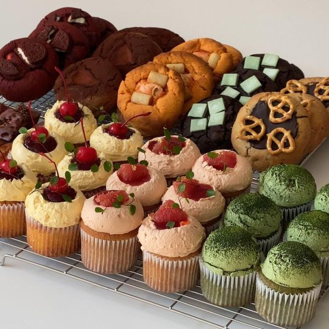

Cà phê (bắt nguồn từ tiếng Pháp: café là một loại thức uống được ủ từ hạt cà phê rang,
lấy từ quả của cây cà phê.
Thông Tin
Cafe

Mèo
Mèo giao tiếp bằng cách kêu meo meo, gừ-gừ, rít, gầm gừ và ngôn ngữ cơ thể.
Mèo trong các bầy đàn sử dụng cả âm thanh lẫn ngôn ngữ cơ thể để giao tiếp với nhau.
Mèo trong các bầy đàn sử dụng cả âm thanh lẫn ngôn ngữ cơ thể để giao tiếp với nhau.
Bánh

Trà (hay chè) là đồ uống phổ biến thứ hai trên thế giới (sau nước uống).
Nó làm bằng cách ngâm lá, chồi, hay cành của cây chè (Camellia sinensis) vào nước sôi từ vài phút đến vài giờ.
Lá chè có thể được oxy hóa (ủ để lên men), sấy rang, phơi, hay pha thêm các loài thảo mộc khác như hoa, gia vị,
hay trái cây khác trước khi chế vào nước sôi.
Nó làm bằng cách ngâm lá, chồi, hay cành của cây chè (Camellia sinensis) vào nước sôi từ vài phút đến vài giờ.
Lá chè có thể được oxy hóa (ủ để lên men), sấy rang, phơi, hay pha thêm các loài thảo mộc khác như hoa, gia vị,
hay trái cây khác trước khi chế vào nước sôi.